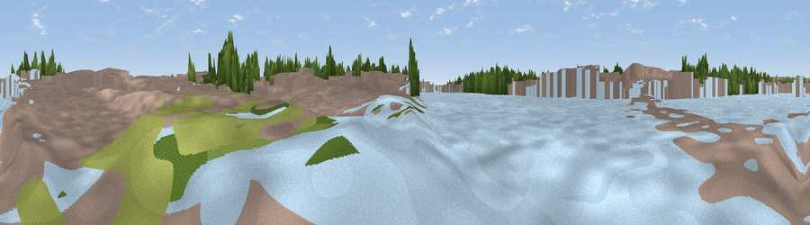

Viewpoint near London
#45782 in England · top 84% of its area beats it · near LondonWhere it is
The exact computed spot (TQ 31200 80522). Click the marker for map links.
The view, rendered

A 360° render of this exact spot computed from the terrain model, tree cover and land cover — summer colours, afternoon light, calibrated against photographs of famous viewpoints. Real trees, hedges and buildings will differ in detail.
The panorama
Grey silhouette: terrain skyline in each direction (720 bearings, Earth curvature and refraction included). Dashed green: skyline with trees (+15 m) and buildings (+8 m) as obstacles. Blue strip: how far the ground is visible on each bearing.
Where the view opens
Wedge length = distance to the farthest visible ground on that bearing (vegetation-aware). Rings at 10, 25 and 50 km.
What fills the view
48% water · 34% built-up · 18% woodland
Angular shares of the visible panorama (visual magnitude), not map area. Landscape diversity 0.45 (0–1 Shannon).
Key numbers
More beautiful places nearby
The staircase of upgrades: each row has a higher view potential than everything closer. Driving times are estimates from straight-line distance, calibrated against real road routing — check an actual route before setting out.
| Place | Direction | Drive | Score |
|---|---|---|---|
| Sky Garden | E · 2 km | ~5 min | 13.1 |
| Viewpoint near Camden Town | NW · 4 km | ~8 min | 16.3 |
| Primrose Hill | NW · 5 km | ~11 min | 27.2 |
| Parliament Hill | NNW · 7 km | ~14 min | 33.3 |
| Viewpoint near East Finchley | NNW · 7 km | ~15 min | 38.5 |
| Harrow on the Hill | WNW · 17 km | ~30 min | 42.3 |
| Viewpoint near Tatsfield | SSE · 27 km | ~43 min | 53.1 |
| Viewpoint near Chaldon | S · 27 km | ~43 min | 60.2 |
51.50840, -0.11087 · source: osm viewpoint · position refined by local search. Computed location — check access rights before visiting.